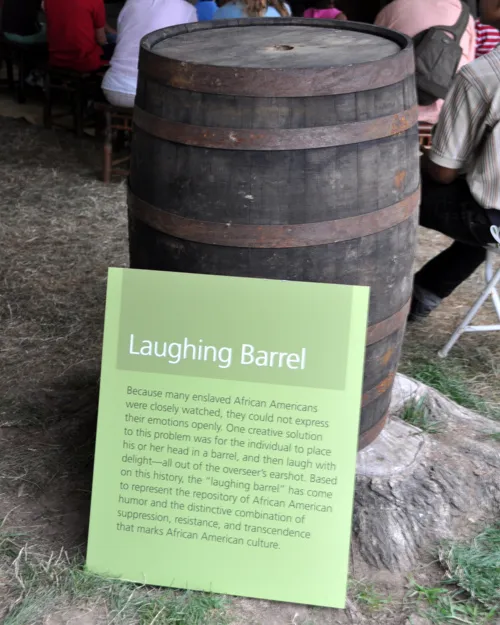

Laughing Barrel
Laughing can be considered a sign of enjoyment and happiness. Something slavery is not. On some plantations, enslaved Africans / African Americans would be punished if they laughed. To avoid being heard laughing, the enslaved individuals would run to a barrel, stick their heads in it, and laugh. Some say this is where we get the saying barrel of laughs and also why Black people run when they are laughing in a group of people.
